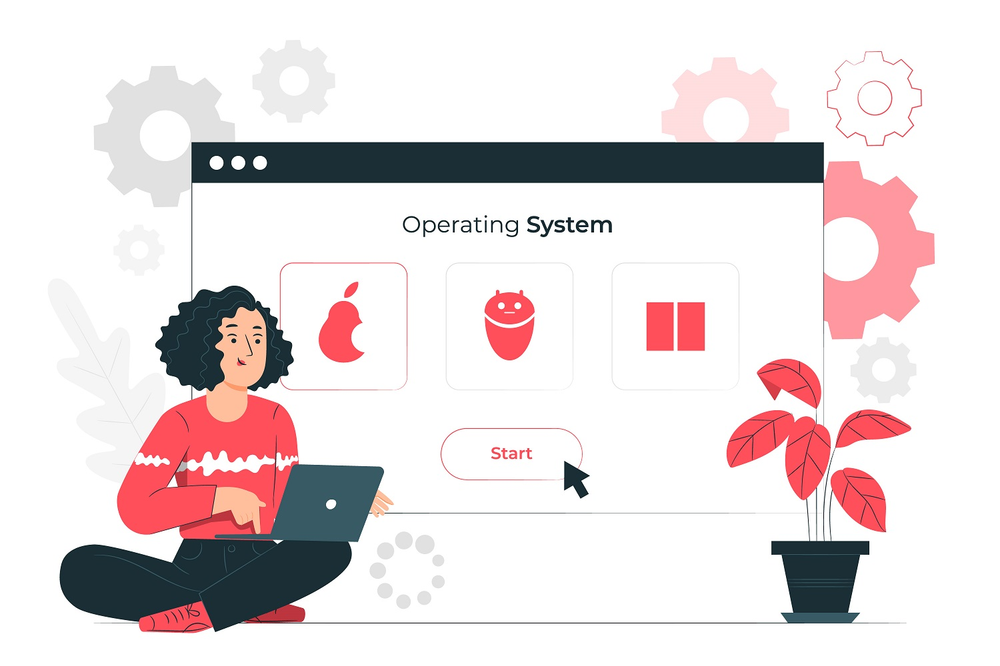

Usabilidad Web y Diseño Centrado en el Usario
En este apartado vamos a hablar de la usabilidad web, el porque es importante. Ademas de que lo que es el diseño centrado en el usuario y que tenemos que tomar en cuenta para que esto se cumpla.
¿Que es la Usabilidad Web?
Este es uno de las caracteristicas más importante en el desarrollo web, ya que es lo que facilita al usuario a como su nombre lo indica un uso fluido y amigable. Pero de que se trata en si.
Este termino se refiere a atributos que hacen que el sitio web sea mas facil de usar para los usuarios. Se enfoca mas que todo en aspecto de diseño, la presentacion y la organizacion de toda la información y por otro lado en la funcionalidad de la misma para que no sea una odisea el usar el sitio web.
¿Es importante la usabilidad web?
Es una de las cosas mas importantes cuando hablamos de diseño web. Porque al tener una usabilidad deficiente puede ocasionar que los usuarios abandonen el sitio web, haciendo que el usuario se frustre y por ende no quiera volver a ingresar o utilizar la página más, es decir, la usabilidad implica que los usuarios utilicen, recomienden y compartan el sitio web, porque para ellos es atractiva y facil de usar.
¿Que es DCU?
Diseño centrado en el Usuario ( DCU), es una metodología que se enfoca en centrar al usuario como eje para el diseño, es decir realizar un diseño que crea experiencias atractivas, asi como la resolucion de problemas y sastifacer las nececidades de los usuarios los cuales interactuan en este caso con el sitio.
¿Es importante?
Es un elemnto crucial para el desarrollo de aplicaciones y sitios web, ya que para los usuarios no solo es importante que funcione, ahora los usuarios esperan tener una experiencia que ellos puedan disfrutar con esto me refiero a que no se complejo si no que tena una interacción fliuda, intuitiva y que satizfaga cada una de las necesidades del usuario.
Principos de Usabilidad
Jackob Nielsen es un experto en usabilidad reconocido por todo el mundo. Se le apoda como padre de la usabilidad web y el es el creador de los principios de usabilidad. El difinela usabilidad como el atributo de la calidad que mide lo facil que es de usar alguna interfaz web.
A continuación cada uno de los pricipios asi como ejmplos de buena practiva y un ejmplo de como no se implemnta
1. Visibiliad del Estado del sistema
Este principo indica que siempre el usario debe estar informado de todo lo que esta pasando en el sitio, ademas de ofrecer una respuesta rapida en el menor tiempo posible.
2. Relación enttre el sistema y el mundo real
Este se refiere a la conexión que se hace con el usurio, es decir, se tiene que hablar el lenguaje de este, haciendo uso de fases o palabras que sean entendibles o bien familiares. Sumado a esto, se deben usar imagenes claras que den a entender lo que queres mostrar. También el orden de la inormación debe ser lógico.
3. Control y Libertad del Usuario
Este se centra en dar la posiblidad al usario de equivocarse sin que pase a más, dar la oportunidad de el mismo resolver el error que cometio, ya que, cualquiera se puede equivocarse y arrepentirse, un ejemplo podria ser el boton de cancelar o borrar.
4. Consistencia y Estándares
Se refiere a utilizar elemntos ya definidos o comunes como lo pueden ser iconos para ciertas funcionalidades de la pagina como lo puede ser el menu hamburguesa que es un simbolo ya conocido universalmente como un menu, evitar confundir al usuario con funcionalidades abstractas que pueden no entenderse del todo bien.
5. Prevención de Errores
Basicamente es Previnir antes que lamentar, como desarrolladores debemos evitar en la medida de lo posible cualquer error que el usaurio pueda cometer al usar nuestro sitio. Y si es que se comete poder resolverlo sin tanto problema.
6. Reconocer antes que recordar
Se refiere a que podamos hacer que el usario en lugar de aprenderse de memoria cada una de las acciones, el pueda reconocer su funcionalidad, un ejmplo muy claro es la seleccion de fuentes al ser demasiadas es muy dificil recordar todos los nombres pero si podemos saber como se ve dando la opcion de visualizarlo.
7. Flexibilidad y eficiencia de uso
Es preparar nuestro sitio para que cualquier usario lo pueda utilizar, desde los principiantes hasta los mas expertos.
8. Diselo estético y minimalista
Quiere decir que los sitios web no deben cargarse con información innecesaria, que puede o bien aburrir al usuario y molestarlo o distraelo. Si no es completamente necesario no ponerlo es la mejor opcion. Se puede recordar usando el KISS => Keep It Simple Stupid.
9. Ayudar a los usaurios a reconocer, diagnosticar y corregir errores
Intentar que todos los errores que puedan ocurrir, sean posibles de resolver por el usuario expresandolos en un lenguaje entendible para tods, que no sea por codigo. Esto quiere decir, enviar mensajes de errores que el usuario entienda como lo es el error mas comun el 404, pero eso es muy tecnico y todas las personas lo entiende, se puede mostrar algo como Lo siento, pagina no encontrada y con esto el usuario sabe lo que sucede.
10. Ayuda y docuemntación
Es dar la el recurso de la ayuda y la documentación aunque el sitio sea facil de usar o intuitivo, esto para darle al usario una mayor confianza a la hora de usarlo, y por si el quiere revisar la docuemntación.
Referencias
- Arenzana, D. (2016, marzo 30). Principios de usabilidad web de Jacob Nielsen y el diseño UX. Semrush Blog; Semrush. https://es.semrush.com/blog/usabilidad-web-principios-jakob-nielsen/
- Coppola, M. (2023, enero 25). Qué es la usabilidad web, principios y ejemplos. Hubspot.es. https://blog.hubspot.es/website/que-es-usabilidad-web
- Grau, B. (2024, mayo 13). ¿Por qué es importante el diseño centrado en el usuario: cómo mejorar su experiencia en aplicaciones y sitios web? ciclick · web solutions. https://es.ciclick.net/importancia-diseno-centrado-en-el-usuario/
- Publicidad, A. (s/f). Introduction to user-centered design (UCD). Aguayo.Co. Recuperado el 21 de octubre de 2025, de https://aguayo.co/en/blog-aguayo-user-experience/user-centered-design/
- Torrejón, M. (2022, abril 20). ¿Por qué es importante la usabilidad web? El blog de Omatech; Omatech. https://www.omatech.com/blog/2022/04/20/por-que-es-importante-usabilidad-web/